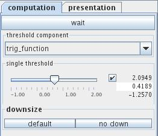
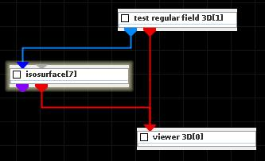
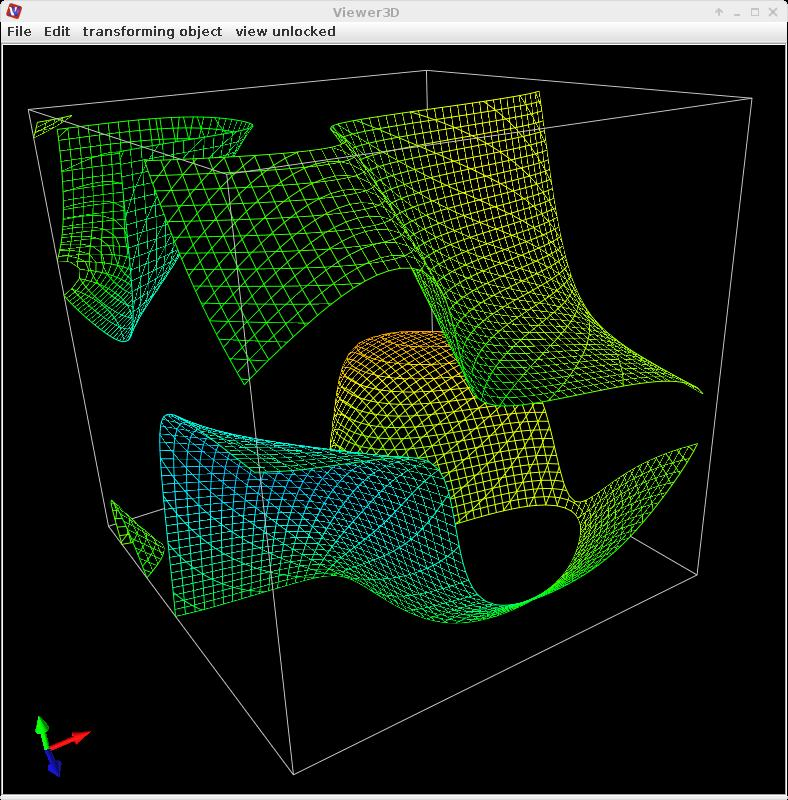

|
|
|

Maps volumetric data creating surface of constant data values.
| input port | type | description | data acceptors |
|---|---|---|---|
| inField | VNField | Input for data field to extract isosurface | Regular Field 3D 3-space scalar component Irregular Field 3-space scalar component with 3D cells |
| threshold | Float | Input for isolevel value | |
| output port | type | description | data schemas |
| isosurfaceField | VNIrregularField | Output for surface field | Irregular Field 3-space 0 cell sets with TRIANGLE cells |
| outObj | VNGeometryObject |
ISOSURFACE
An isosurface is a form of visualization for volume datasets, it represents points of a constant value in a 3D space.
Input data
At input the module requires either a regular 3D 3-space field with at least one scalar component or an irregular 3-space field with at least one scalar component and at least one cellset containing 3D cells.
Optionally the module has an input port for an isolevel float value.
Output data
At output the module delivers a surface field as an irregular 3-space field and a geometry object.
Computation tab

If wait button is on the module does not process data. Processing is continued if the button is set off. This possibility is useful for adjusting of parameters for big datasets.
Threshold component drop down list defines the component of the input field which is to be presented. By default, the first component of the list is used. For vector fields its norm is calculated.
The single threshold slider enables the user to choose the isosurface value. If checkbox on the right hand side of the slider is on, the user may adjust range and value entering the values in text boxes.
For big data sets data are downsized by default. The default downsize button downsizes input data, the no down button reverses downsize.
Presentation tab
Presentation tab contents are described in the common interfaces section unter the Presentation Panel entry.
Example

Choose test regular field 3D module from test objects library and isosurface module from 3D field mappers library and connect them.
In the computation tab of the isosurface module choose for threshold component trig_function, and threshold value 0.57. In its presentation tab choose color component gaussians, switch surfaces and lines on, choose background presentation.
